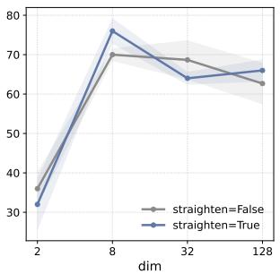

ICML 2026 + JEPA/world model · P1 · 2026-06-16
Temporal Straightening for Latent Planning：作为 ICML camera-ready 状态更新，值得从“JEPA 表征几何如何影响行动/规划”角度读
把 perceptual straightening 假说落到 latent planning：表征好不好，不只看分类/预测，还看规划目标条件数和梯度稳定性。
编号2603.12231
优先级P1
类别ICML 2026 + JEPA/world model
会议ICML 2026 + arXiv 更新 + JEPA/world model
方法在 JEPA world model 中加入 temporal straightening curvature regularizer，让局部 latent trajectories 更直，使欧氏距离更接近 geodesic distance。
来源arXiv / OpenReview
先说结论。作为 ICML camera-ready 状态更新，值得从“JEPA 表征几何如何影响行动/规划”角度读。 把 perceptual straightening 假说落到 latent planning：表征好不好，不只看分类/预测，还看规划目标条件数和梯度稳定性。


核心问题
作为 ICML camera-ready 状态更新，值得从“JEPA 表征几何如何影响行动/规划”角度读。
方法拆解
在 JEPA world model 中加入 temporal straightening curvature regularizer，让局部 latent trajectories 更直，使欧氏距离更接近 geodesic distance。
主要贡献
把 perceptual straightening 假说落到 latent planning：表征好不好，不只看分类/预测，还看规划目标条件数和梯度稳定性。
实验看点
摘要称在一组 goal-reaching tasks 中提升 gradient-based planning 稳定性和成功率。
局限与读法
更偏规划/控制，不是纯图像 benchmark；需要确认视觉 encoder 预训练、环境多样性和对 V-JEPA/I-JEPA 的兼容性。